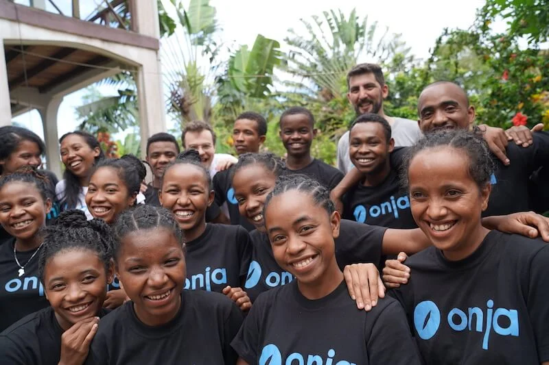

MY FIRST BLOG.
Describing my self.
My name is jacquit and I'm 23 years old. I'm a student from Madagascar,
I'm writing this blog because I want to share to you some great points
that I've encountered in my study. Also I want to get any
suggestion from you for the things I still need to improve on this blog.
So please have a great time to read this blog.

About ONJA.
I'm studying at ONJA school, which is a NGO lead by SAM and located in
Mahanoro. We are twenty students at ONJA, to learn english and coding
with seven staff. This organisation is based on supporting the student
who can't go to university but still want to study.We studyed english
last year up to now, but this year we focus more on coding.

My study at onja
At the beginning of my study.
Generally, I really love studying because I want to learn many
things. As far as I'm concerned, study assists me to have a better
life in the future as many students want. That's what I'm doing now.
However, at the beginning, I found it really hard to get started and to get
use to it, but in fact working hard pushed me to get over that. That's why,
I admit that nothing is easy on earth without
trying hard. Apart from that I had to change many things, including
the way of studying. Moreover, I needed to set up a new method of managing
time so that I can use my time wisely.
At the moment.
At this time, my study is getting better. Thanks to all sophisticated
staff at ONJA because without them I would never be on tihis stage now.
Thank you very much for devoting yourself to reading my blog.

"Thank you very much ONJA".